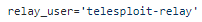
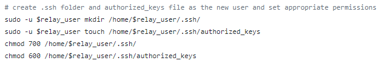

1.3 Add authorized_keys to the relay
Once the Telesploit server and client are setup, add their SSH public keys to /home/telesploit-relay/.ssh/authorized_keys (default install) on the relay
During the configuration of the relay with relay_setup.sh we have created
/home/$relay_user/.ssh/authorized_keys file where by default $relay_user is "telesploit-relay"
daniele@TelesploitRelay:~$ sudo -i
root@TelesploitRelay:~# cd /home/telesploit-relay/.ssh/
root@TelesploitRelay:~# nano authorized_keys
We have to add the same public key <penTesterPublicKey> used the
Configuration of the Server at point 5.2